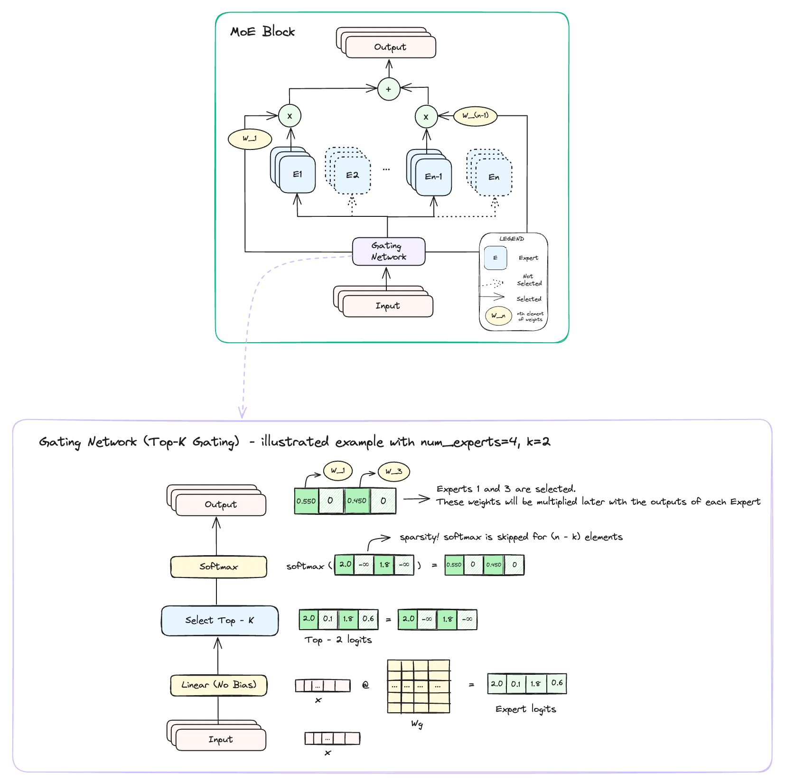

Hi, I'm interested in efficient ways to do ML.
I'm an undergrad at UC Berkeley currently on a gap year.
I had my first experience with optimization this summer by making my lab's codebase for protein structure estimation 3.5x faster. And Nsight Systems was at the core of making that possible. This guide is a practical tutorial on how to use Nsight Systems where we'll walk through Karpathy's nanoGPT repo.
In our last post, we saw the jump from FP32 to FP16, but can we go even lower? Let’s dive into the next frontier: FP8. We’ll be deep-diving into two significant papers that made FP8 training possible. The first introduced the hybrid FP8 format and the second refined it into a generalizable IEEE-754 floating point capable of training models as large as GPT-175B with minimal performance loss.
NVIDIA's latest GPU, the Blackwell series, has taken another leap forward with its support for FP4 representations. But where did this idea of leveraging lower precision formats for efficient ML all start? What are the techniques used to amend underflows/overflows despite using reduced precision formats? This series on Mixed Precision Training explores the origins and evolutions of this approach, starting from the OG Mixed Precision Training paper released way back in 2017.

Key ideas used in the MoEs are sparsity, parallelism, and meta-learning. This technique has opened doors for scalable model training and has become a standard practice when building modern LLMs. Some examples of LLMs using MoEs include Databrick’s DBRX, Snowflake’s Arctice, xAI’s Grok and the list continues to grow as the technique improves more and more.
